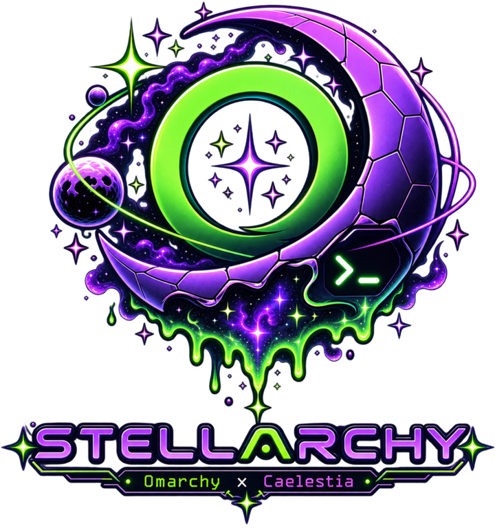

Omarchy × Caelestia
Bar, notifications, OSD, launcher and lock screen from Caelestia — as a systemd user service that survives crashes and relogs.
omarchy-theme-set keeps working: every theme's colors are mapped into Caelestia's Material tokens live. Any Omarchy theme, zero per-theme config.
Root, power, keybinds, themes with previews, packages, updates, defaults — all themed from the live Caelestia scheme via stellarchy-fuzzel.
An opt-in stellarchy plymouth theme, one menu entry away. A libalpm splash guard re-applies it to any kernel installed later — no more stock splash surprises.
Prebuilt via chaotic-aur — EEVDF, BORE, LTS or real-time, one menu away. Limine's default entry follows by name, immune to snapshot churn.
Every system update also pulls the remux and re-syncs your install — configs merge in place, your edits always win. No manual upgrading, ever.
A preflight verifies the whole next-login chain before logout — any failure rolls everything back so your machine stays usable stock Omarchy.
Omarchy Quattro required:
git clone https://github.com/deoxizn/stellarchy.git ~/.local/opt/stellarchy cd ~/.local/opt/stellarchy ./install.sh # add -y to skip prompts, --dry-run to preview
Running an older installation? One catch-up brings you current — new menus, self-updates, all of it:
git pull && ./sync.sh # once — after this, omarchy-update keeps everything current for you
Backing out is one command: ./uninstall.sh restores your backups and hands the shell back to omarchy.
| Binding | Action |
|---|---|
| SUPER+Space | Caelestia launcher (apps, wallpaper, schemes) |
| SUPER+Alt+Space | Stellarchy root menu |
| SUPER+Alt+D | Dashboard — media, weather, stats, network, BT |
| SUPER+N | Notification shade / sidebar |
| SUPER+Ctrl+L | Lock (displays off ~20s later) |
| SUPER+Escape | Power menu |
| SUPER+Q | Close window |
| SUPER+Return | Terminal |
| Media keys | Any MPRIS player — no hardcoded app |
| SUPER+K | Full searchable keybinding list — or SUPER+Alt+Space → Keybinds |
~/.config/omarchy/plugins/ silently disappear.| Stock Omarchy part | In stellarchy | Replacement / notes |
|---|---|---|
| omarchy-shell (bar, notifications, OSD) | Removed | Caelestia Shell provides all three |
| omarchy-shell lock screen | Removed | Caelestia session lock via caelestia-system-lock (also turns displays off ~20s after locking) |
| omarchy-shell menus (root/power/keybinds/themes/packages/update/config/defaults) | Removed | Fuzzel suite stellarchy-*, themed from the live Caelestia scheme |
omarchy-menu toggle apps/root | Rebound | SUPER+Space → Caelestia launcher, SUPER+Alt+Space → Stellarchy root menu |
Media keys (XF86Audio*) | Were dead, now rebound | stellarchy-media — controls whichever MPRIS player is currently playing; no hardcoded app |
| Clipboard panel (SUPER+Ctrl+V) | Was dead, now rebound | caelestia clipboard |
| Emoji picker (SUPER+Ctrl+E) | Was dead, now rebound | caelestia emoji |
| Dismiss notifications (SUPER+,) | Partially replaced | Clears all notifications via Caelestia IPC; per-notification dismiss has no equivalent |
| Invoke last / notification history | Gone | No Caelestia IPC equivalent exists |
| Audio/BT/network/calendar panels (SUPER+Ctrl+A/B/W/SUPER+Alt+D) | Unbound | Retired — the Caelestia dashboard (SUPER+Alt+D) covers audio/BT/network/calendar |
| Power panel (SUPER+Ctrl+P) | Rebound | Opens the Caelestia session menu |
| Bar panel chords (SUPER+Ctrl+F1-F9) | Unbound | Caelestia's bar has no panel-at-index IPC |
| Idle lock / suspend wiring | Replaced | Managed hypridle.conf: locks through caelestia-system-lock, DPMS-off after lock, suspend-then-hibernate at 10 min |
Theme switching (omarchy-theme-set) | Works as before | A hook bridges each theme's colors.toml into Caelestia's M3 scheme live |
| Window management, workspaces, app binds | Works as before | Untouched Omarchy defaults |
Anything not listed here that shells out to omarchy-shell in your own scripts will also be dead — grep for it.